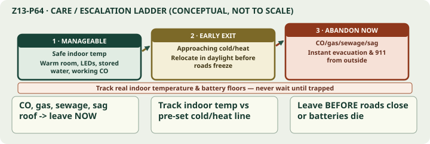

Z13-P64 · Home survival and utilities · New manuscript
Recognize indoor habitability loss and structural abandonment cues
Establish clear physical red lines when staying in a damaged or unpowered home becomes more dangerous than leaving.
When it applies · Prolonged winter freezes, summer heat domes, flood-damaged homes, or storm-impacted structures.
Equipment · Indoor thermometer, CO/smoke alarms, flashlight, and pre-packed household go-bags.

Actions
- Recognize non-negotiable structural and air-quality abandonment cues: persistent or repeated CO alarm activations, unresolved gas/fuel odors, indoor smoke or severe unmitigated wildfire haze, raw sewage flooding living zones, or structural storm/snow-load damage (cracked load walls, sagging roofs, jammed doors).[U17, C07, U11, U10]
- Track indoor temperature objectively with a thermometer during multi-day outages—relocating BEFORE indoor winter air plunges into hypothermia/pipe-freeze territory (especially with infants, older adults, or chronic illness) or before indoor summer heat traps dangerous heat-stroke temperatures without cooling.[U17, U10, D09]
- Never remain inside a flood-damaged or storm-struck building solely to guard belongings when utilities, sanitation, and safe shelter temperatures have failed.[U17, D05]
Failure recognition · Toughing out a 38°F unheated house with an elderly parent and failing medical batteries until roads freeze solid and ambulances cannot reach the driveway.[U17, T10]
Verify · Confirm objective indoor temperature, air-quality, sanitation, and medical-battery red lines are agreed by the whole household in advance.[U17, T10]
Stop or change course · Crossing ANY habitability red line triggers orderly departure to pre-planned shelter while daylight and roads still allow safe travel.[U17]
Evidence and editorial notes
- C07 · CPSC · Carbon Monoxide Fact Sheet (current web edition)
- Section: CO poisoning symptoms; what to do if suspected · Conditions: Suspected carbon monoxide exposure
Support: Escape to fresh air immediately and contact emergency services. Symptoms can include headache, dizziness, nausea and confusion.
Limitations: CO is colorless and odorless; symptoms mimic viral illness or altitude fatigue and can incapacitate sleepers without waking. · Conflicting evidence: None; aligns with CDC-CO.
Editorial note: Standard CO emergency stop condition across Z02 and Z03. · Specialist reviewer: Carbon monoxide safety and emergency medicine
Primary source · checked 2026-11-24 - D05 · FEMA / Ready.gov · Floods (current web edition)
- Section: Floods > Flash Flood Evacuation, Turn Around Don't Drown, and Re-Entry · Conditions: River flooding, urban flash flooding, dam/levee risk, and post-flood return
Support: Evacuate early when ordered, move to higher ground immediately on Flash Flood Warnings, never walk or drive through floodwater (6 inches knocks down adults; 12 inches carries most cars), and never enter flood-damaged homes until electrical, gas, and structural hazards are cleared.
Limitations: Floodwaters commonly contain raw sewage, fuel, submerged debris, and energized downed wiring. · Conflicting evidence: None; aligns with T07, T16, and N10.
Editorial note: Core flood evacuation, water-avoidance, and safe re-entry evidence. · Specialist reviewer: Emergency management and flood hydrology
Primary source · checked 2026-11-24 - D09 · FEMA / Ready.gov · Extreme Heat (current web edition)
- Section: Extreme Heat Waves, Heat Domes, and Power-Outage Cooling Plans · Conditions: Prolonged heat advisories, excessive heat warnings, and grid-strain brownouts
Support: Identify public cooling centers and air-conditioned backup locations ahead of heat waves, check twice daily on older adults/children/chronically ill neighbors, block solar gain through windows, never leave people or pets in parked vehicles, and activate 911 immediately for heat stroke.
Limitations: Electric fans alone do not prevent heat illness when indoor air temperatures climb into extreme heat ranges (above ~95°F) with high humidity. · Conflicting evidence: None; aligns with CDC-HEAT, E08, E19, and T09.
Editorial note: Anchors urban/rural heat-wave resilience and vulnerable-neighbor checks. · Specialist reviewer: Public health and emergency medicine
Primary source · checked 2026-11-24 - T10 · FEMA / Ready.gov · People with Disabilities (current web edition)
- Section: People with Disabilities > Make a Plan and Build a Kit · Conditions: Individuals with mobility, sensory, medical, or power-dependent access and functional needs
Support: Build a personal support network, plan accessible evacuation transport, register voluntarily with local emergency registries where available, and plan backup power and spare supplies for medical devices, medications, and service animals.
Limitations: Local registry availability and utility priority-restoration policies vary by jurisdiction. · Conflicting evidence: None; extends generic preparedness plans to accessible requirements.
Editorial note: Directly addresses Z01 accessible emergency planning requirement. · Specialist reviewer: Accessible emergency management and disability preparedness
Primary source · checked 2026-11-24 - U10 · FEMA / Ready.gov · Winter Weather (current web edition)
- Section: Winter Household Resilience > Frozen Pipes, Ice Dams, and Heating Loss · Conditions: Sub-zero Upper Midwest winter outages and prolonged cold snaps
Support: Prevent burst pipes by insulating exposed lines, keeping cabinet doors open, shutting off and draining water lines per plumbing guidance if indoor temperatures drop toward freezing, and consolidating household occupants into one safe insulated interior room.
Limitations: Draining hydronic boilers or gas water heaters requires exact manufacturer/plumber steps to prevent equipment damage or gas leaks. · Conflicting evidence: None; regionalizes winter home defense for Minnesota conditions.
Editorial note: Anchors winter pipe protection, thermal-zone consolidation, and abandonment thresholds. · Specialist reviewer: Residential plumbing, HVAC, and cold-weather emergency management
Primary source · checked 2026-11-24 - U11 · FEMA / Ready.gov · Hazardous Materials Incidents (current web edition)
- Section: Natural Gas Leaks, Fuel Odors, and Utility Shutoff Boundaries · Conditions: Suspected household natural gas, propane, or fuel-oil leak
Support: If you smell rotten eggs/mercaptan or hear hissing near gas lines, leave the building immediately without toggling light switches or using phones inside, and call 911 and the gas utility from outside; never turn gas back on yourself.
Limitations: Only the gas utility or licensed technician may restore shut-off gas service and relight pilot systems safely. · Conflicting evidence: None; critical residential utility stop condition.
Editorial note: Establishes strict utility-leak evacuation and licensed restoration gates. · Specialist reviewer: Gas utility safety and fire service
Primary source · checked 2026-11-24 - U17 · FEMA / Ready.gov · Evacuation (current web edition)
- Section: Household Evacuation Thresholds When Utilities Fail · Conditions: Uninhabitable indoor temperatures, sewage backup, persistent CO alarm, or structural/utility hazard
Support: Establish clear pre-agreed exit triggers to relocate to a warming center, hotel, or relatives BEFORE indoor freezing, carbon monoxide alarms, medical-device battery exhaustion, or impassable blizzard roads trap occupants.
Limitations: Waiting until indoor pipes burst or batteries hit zero removes safe travel options. · Conflicting evidence: None; aligns with T13 and E14.
Editorial note: Defines objective household abandonment thresholds in Z13. · Specialist reviewer: Emergency management and cold-weather operations
Primary source · checked 2026-11-24
Source lineage · FEMA Ready.gov Evacuation and Winter Weather; new manuscript · Classification · New manuscript.